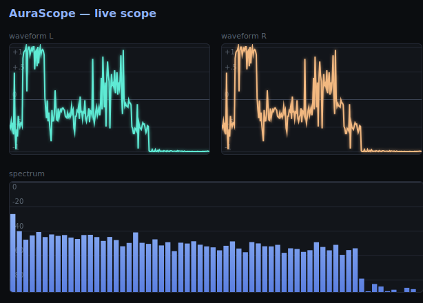

Streaming, and a scope to watch it with
The goal of this step
Step 03 ended with the receiver enumerated as ALSA card 0. That proves the kernel found the device. It says nothing about whether audio is actually arriving, or whether what arrives is correct. This step closes that gap — and does it with something I can leave running and glance at, rather than a one-shot command.
The result is aurascope-dash: a small C program on the board that captures from
ALSA, computes levels and a spectrum, and serves a live dashboard over HTTP. Two views, which
answer two different questions:
- Instantaneous — what does the signal look like right now? Waveform, spectrum, level meter.
- The last 30 seconds — has it been behaving? A rolling RMS and peak trace.
Why arecord isn't enough
arecord -d 5 test.wav proves bytes moved. It does not tell you the signal is
right, and it can't be watched while you change something at the other end of the
link. Most of what I actually wanted to know is temporal: does the level hold steady, does it
drop out when I walk away from the transmitter, does the noise floor sit where it should.
Capturing the audio
audio.c opens the PCM device and runs a detached capture thread. The parameters
are deliberately unambitious — this is a monitor, not a recorder:
| Parameter | Value | Why |
|---|---|---|
| Rate | 48000 Hz | Matches the Auracast/LC3 chain end to end, so nothing resamples. |
| Format | SND_PCM_FORMAT_S16_LE | What the UAC device presents; no conversion needed. |
| Channels | 2 (stereo) | The Auracast side broadcasts one BIS per channel, so left and right arrive over separate streams and are worth watching separately. |
| Period | 512 frames | ≈10.7 ms — fast enough to feel live, large enough that the wakeup rate is not a burden on a Cortex-A9. |
FFT_SIZE | 1024 | ≈47 Hz per bin at 48 kHz. |
WAVE_POINTS | 256 | Waveform decimated by stride = FFT_SIZE / WAVE_POINTS. |
SPEC_BARS | 64 | Bins folded down to something a browser can draw legibly. |
What gets computed each period
RMS and peak are the two numbers that matter, both in dB relative to full scale, with the
+ 1e-9f guard that stops digital silence turning into -inf:
rms = sqrtf((float)(sq_sum / (double)n)); rms_db = 20.0f * log10f(rms + 1e-9f); peak_db = 20.0f * log10f(peak + 1e-9f);
Peak alone is too twitchy to read on a moving meter, so there's a separate held value that
jumps instantly to a new maximum and then bleeds away at peak_hold_db -= 0.3f per
period — about 28 dB per second. Fast enough to follow real changes, slow enough that a
transient stays on screen long enough to see.
The spectrum is a 1024-point FFT with a Hann window applied first
(fft_hann_window()). The window is not optional: an FFT implicitly assumes the
block repeats forever, and a sine that doesn't fit a whole number of cycles into the block
produces a discontinuity at the seam. Untapered, that smears energy across every bin —
a single clean tone comes out looking like broadband noise. Hann tapers both ends to zero and
the tone lands where it belongs.
Getting it to a browser
Everything lands in one audio_snapshot_t guarded by a mutex — the capture thread
writes it, the HTTP thread reads a consistent copy:
typedef struct {
long ts_ms;
float rms_db;
float peak_db;
float peak_hold_db;
float wave[WAVE_POINTS];
float spec[SPEC_BARS];
} audio_snapshot_t;
The transport is Server-Sent Events over a hand-rolled HTTP server, which is
two deliberate choices. SSE rather than WebSockets because the data only ever travels one way:
SSE is plain HTTP with a text/event-stream content type and newline-delimited
frames, needs no handshake or framing library, and the browser reconnects on its own when the
board reboots. And hand-rolled rather than pulling in a web server, because adding a package to
an embedded image to serve one static page and one event stream is not a trade worth making.
Frames go out at roughly 10 Hz — decimated from the ~94 Hz capture period, since nothing on screen benefits from being redrawn faster than the eye resolves.
The two views
The client is a single index.html drawing to Canvas off the EventSource
stream. No framework, no build step, no CDN — it has to work on a board that may have no route
to the internet.
Instantaneous: a waveform per channel normalised to ±1, the spectrum on a −90 dB to 0 dB scale, and a vertical level meter spanning −60 dB to 0 dB with the RMS as a gradient fill and the held peak as a red line above it.
The last 30 seconds: a rolling chart holding HISTORY_LEN = 300
samples — at ~10 Hz, exactly 30 seconds — plotting RMS in green against peak in red, on a
0 to −60 dB scale. This is the panel that catches the problems worth catching. A steady
pair of lines means the link is healthy; a notch means something dropped.
Why left and right get their own chart
Splitting the waveform into two panels looks like a presentation choice. It isn't — it follows the shape of the transport underneath.
0x1 and
0x2 — and the receiver syncs to both, which is why it reports the stream bitfield
as 0x0003. Left and right therefore travel over the air separately and can fail
separately. Averaged into one trace, a channel dropping out shows up as a mild dip that looks
like a quiet passage. Drawn side by side, it is unmissable: one panel keeps moving and the
other flatlines. That single glance rules out a whole class of fault — and points at one BIS
rather than the whole link.

- The two channels track each other. Same bursts, same envelope, same decay into silence at the right-hand edge. That is the healthy result: both BIS streams are arriving and staying in step. Divergence between these two panels is the failure this layout exists to make obvious.
- This is real audio, not the test tone. A dense, constantly varying signal rather than a clean square wave — which is a stronger end-to-end result, because it means the chain is carrying real broadband content rather than something trivially compressible.
- Spectrum — energy spread broadly across the lower and middle bars with a sharp drop across the last few, on a 0 to −80 dB scale. The rolloff at the top end is the expected shape for LC3 at this bitrate: the codec spends its bits where the content is and lets the highest bands go.
- Both traces reach the rails. The peaks are hitting the ±1 gridlines, so the source is running hot. Worth watching — this is the panel that would show clipping as flattened tops before it became audible.
Packaging it
The whole thing is a normal Yocto recipe rather than something scp'd onto the board by hand, so it survives a reflash and ships with the image. The recipe's own summary is the honest one-line description of the program:
# meta-aurascope/recipes-apps/aurascope-dash/aurascope-dash_1.0.bb
SUMMARY = "Captures ALSA audio, computes RMS/peak/FFT, and serves a \
Canvas + Server-Sent-Events dashboard over a hand-rolled HTTP server."
An init script starts it at boot, so the dashboard is up as soon as the board is:
$ /etc/init.d/aurascope-dash status $ curl http://<board-ip>:8080/
Result
Audio from the nRF5340 gateway's microphone travels over Auracast, decodes on the receiver, crosses USB into ALSA on the Zynq, and is visible in a browser as a live waveform, spectrum and level trace. That's the wireless-to-Linux path proven end to end, not inferred from an enumeration message.
It also builds the thing the rest of the project needs. Phase 3 is about observing this audio path two different ways — and both of those need somewhere to display their output. That somewhere now exists, with a live data feed already plumbed into it.
Files
| Path | What it does | |
|---|---|---|
| new | recipes-apps/aurascope-dash/aurascope-dash_1.0.bb | The recipe — builds and installs the daemon |
| new | .../files/aurascope-dash.init | Starts it at boot |
| new | .../files/audio.c, audio.h | ALSA capture thread, RMS/peak/hold, snapshot struct |
| new | .../files/fft.c, fft.h | 1024-point FFT and Hann window |
| new | .../files/http.c, http.h | Hand-rolled HTTP server and the SSE feed |
| new | .../files/index.html | Canvas dashboard — the whole client |
| new | .../files/main.c, Makefile | Startup and build |
| changed | recipes-core/images/aurascope-image.bb | Adds aurascope-dash to the image |
Code
Commit e1e1bfe · code: aurascope-dash